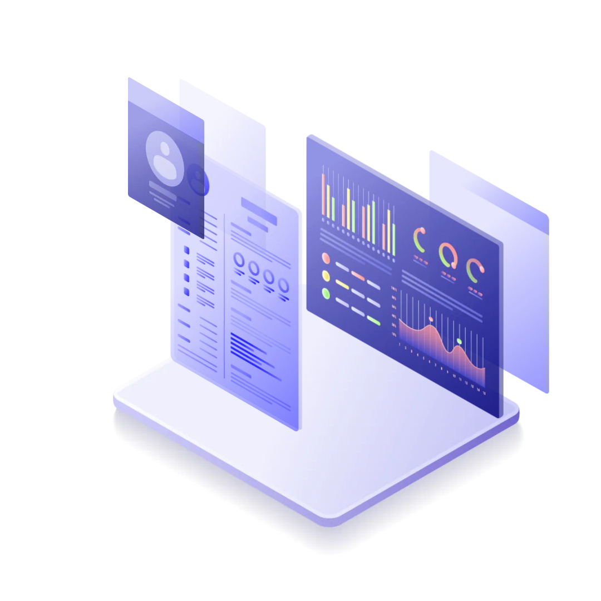

Estudiante de ingeniería en informática
Desarrolladora web
Lucia Keuyluian
Te doy la bienvenida a mi portafolio, aquí vas a encontrar mis proyectos y habilidades.
CV Proyectos
Estudiante de ingeniería en informática
Desarrolladora web
Te doy la bienvenida a mi portafolio, aquí vas a encontrar mis proyectos y habilidades.
CV Proyectos

Soy estudiante de Ingeniería en Informática con interés en desarrollo web e inteligencia artificial. He realizado varios cursos en desarrollo web, Python y digital product management. Actualmente estoy realizando una certificación en Digital House. 🚀
En mi tiempo libre me gusta aprender nuevas tecnologías. Además hace años que disfruto de realizar deporte en equipo, lo que me ayudó a desarrollar habilidades para el trabajo en equipo y la comunicación. 🤝